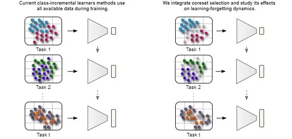
News
Recent milestones. The full archive is a click away.
"Coresets are more than replay: a data-centric view of continual learning" published in Neural Computing and Applications.
"Automated Machine Learning for Unsupervised Tabular Tasks" accepted to MLJ.
"Unlocking [CLS] Features for Continual Post-Training" accepted to TMLR.
"Pruned Adaptation Modules" accepted to CPAL.
"Self-Regulated Neurogenesis for Online Data-Incremental Learning" accepted for an oral presentation at CoLLAs.
Joined the General Assembly of the EU project SYNERGIES in Paris, France.
Participated in the "Learning Over Time" spring school at Certosa di Pontignano, Italy.
Attended the GeMMS summer school on generative modelling at TU Eindhoven.
"Continual Learning with Dynamic Sparse Training" accepted for an oral presentation at CPAL.
"AdaCL: Adaptive Continual Learning" accepted for an oral presentation at CLAI.
"Condition Monitoring and Predictive Maintenance in Railways" granted an international patent.
AutoML for hole-selective layers in perovskite solar cells published in Energy Technology.
"Predicting Perovskite Bandgap and Solar Cell Performance with ML" published in Solar RRL.
ML for metal-oxide polymer composites in perovskite solar cells published in ChemPlusChem.
Comparison of ML models on electrochromic devices published in ACS Omega.
Publications
Selected work on continual learning, and earlier work on ML for materials science.
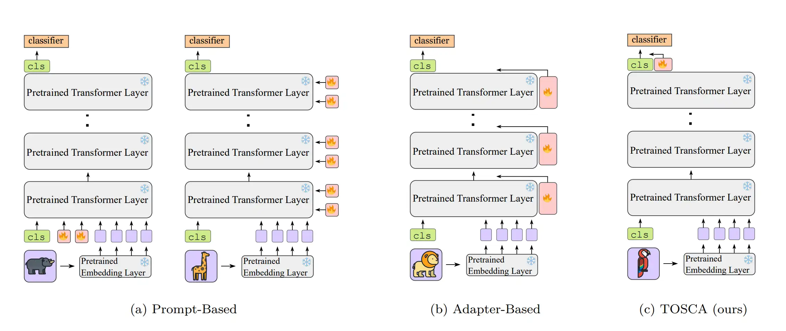
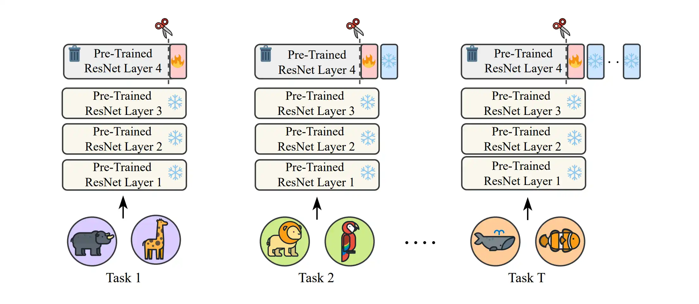
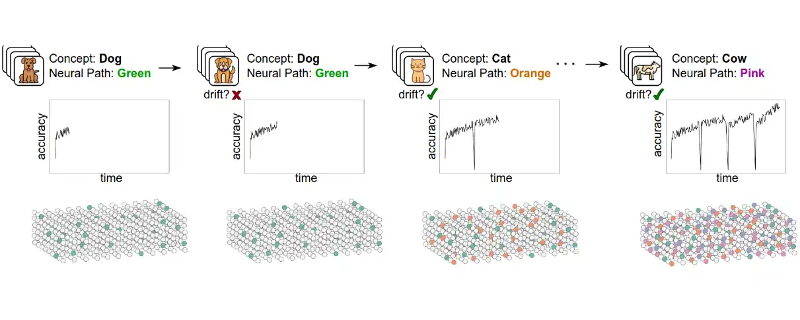
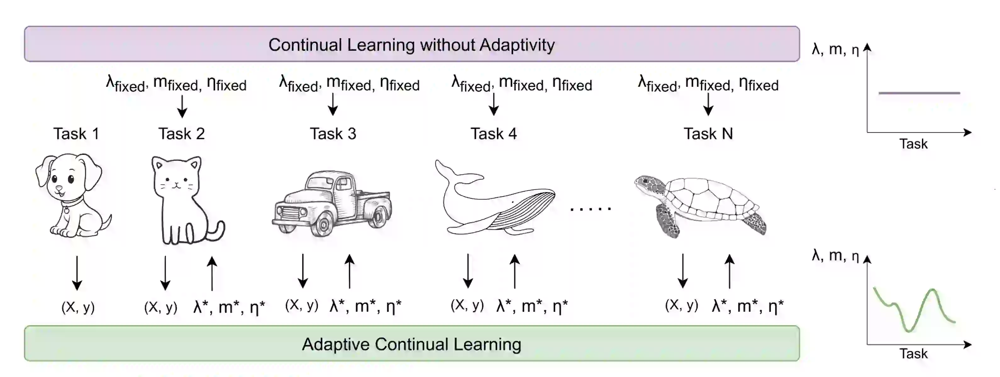
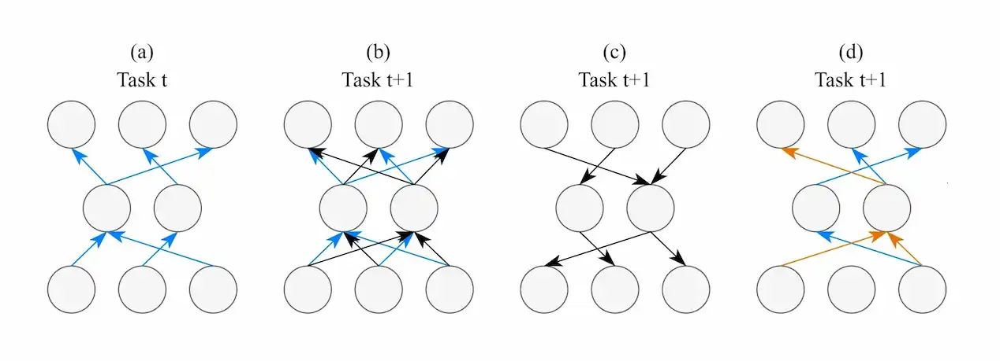
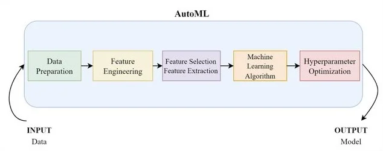
Energy Technology 2023
Automated machine learning in material discovery of hole selective layers for perovskite solar cells
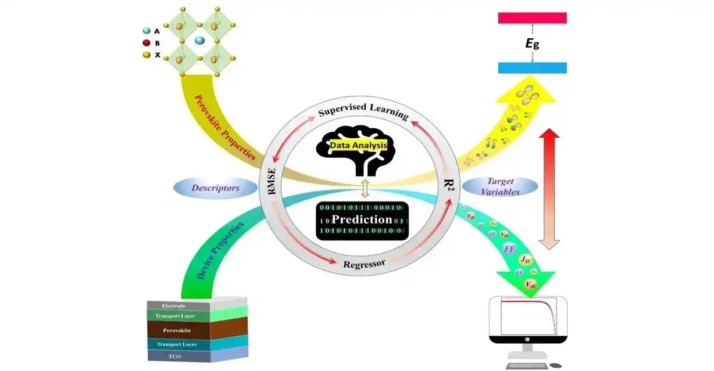
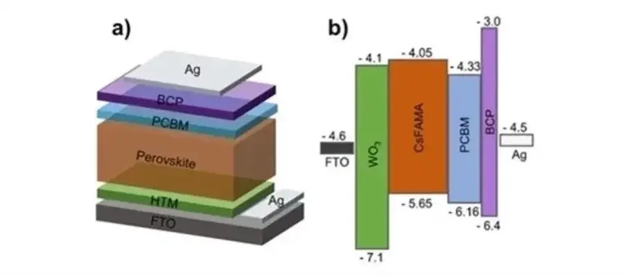
ChemPlusChem 2021
A machine learning approach for metal oxide based polymer composites as charge selective layers in perovskite solar cells
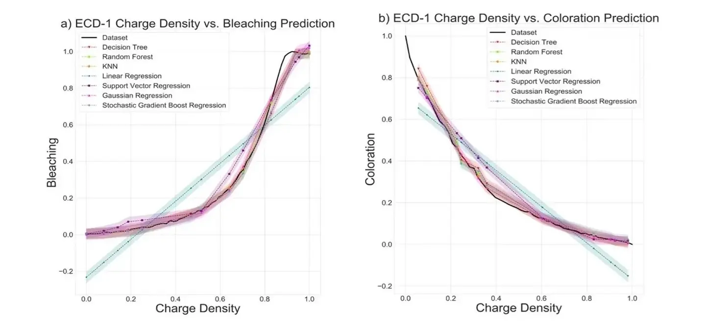
ACS Omega 2020
Comparison of machine learning models on performance of single- and dual-type electrochromic devices
Supervision
If you are excited about efficient adaptation and post-training strategies, I would love to brainstorm ideas and support your journey in a collaborative, low-pressure environment. I have been lucky to work with these talented and curious people:
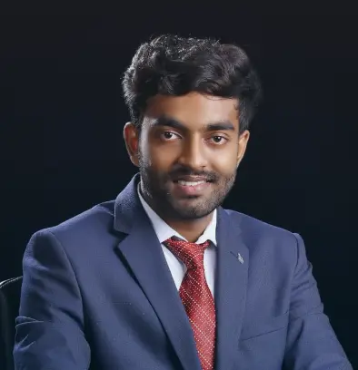
Danushkumar Venkadesh Clover: revisit-aware benchmark suite for continual post-training of foundation models · 2026, ongoing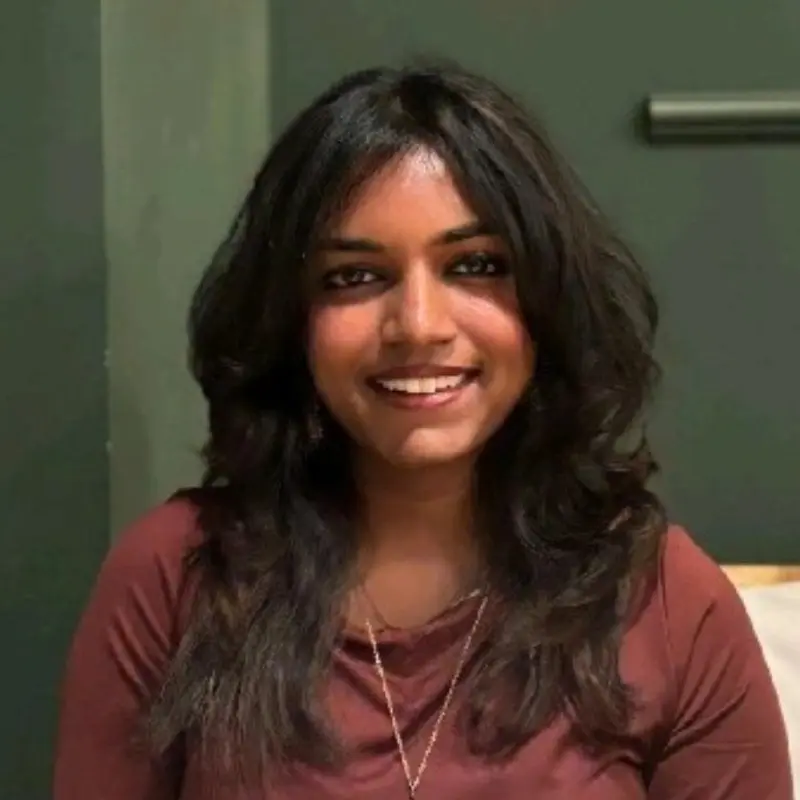
Shreya Sajid Muting tokens: exploring token sparsification for efficient audio transformers · co-supervised by NXP, 2025
Athira Kulampurath
Reliability and uncertainty in foundation model-based class-incremental learning · 2025
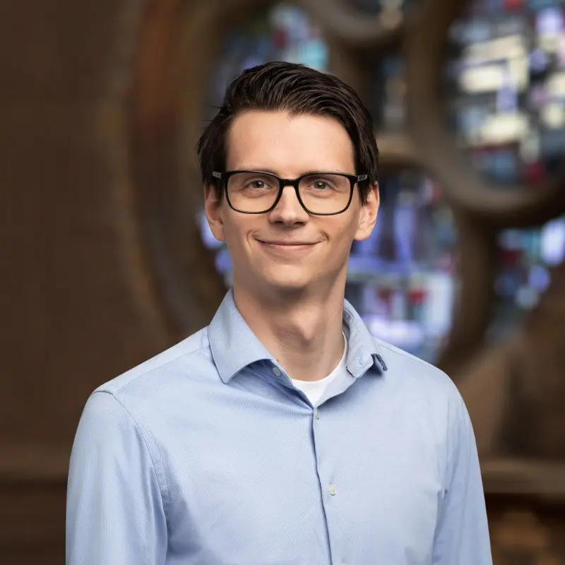
Coen Schouten On-the-fly curriculum design for online class-incremental learning · cum laude, 2024 — thesis